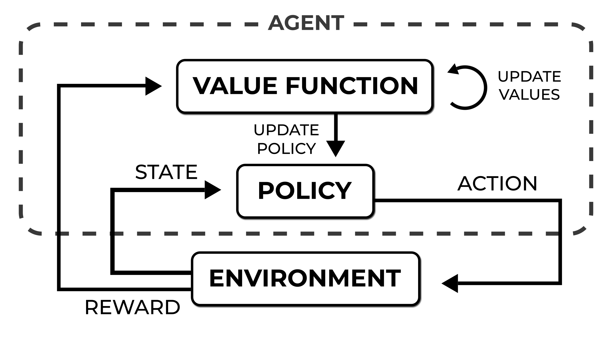
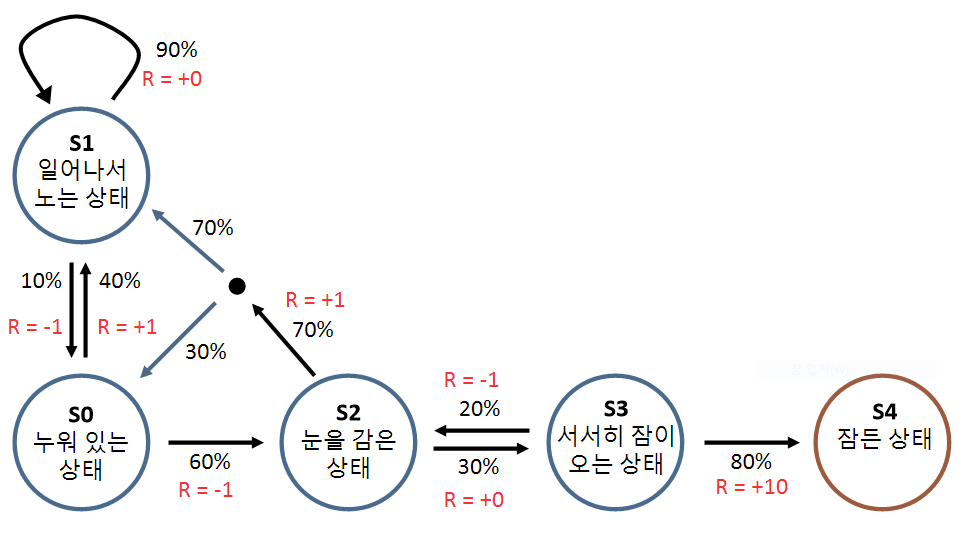
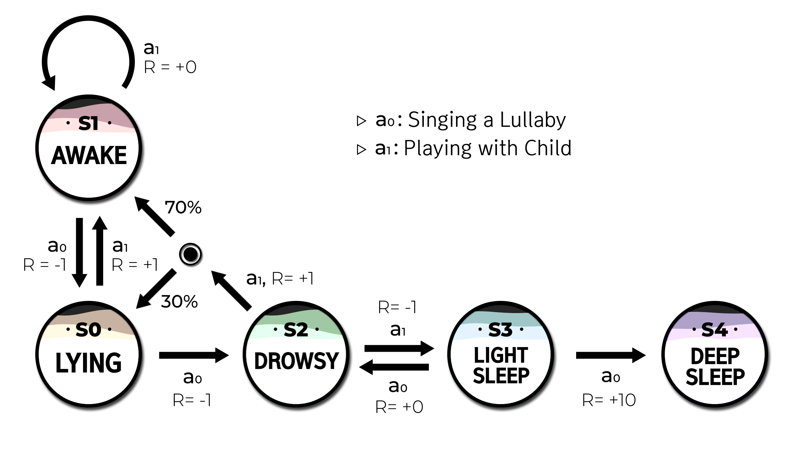
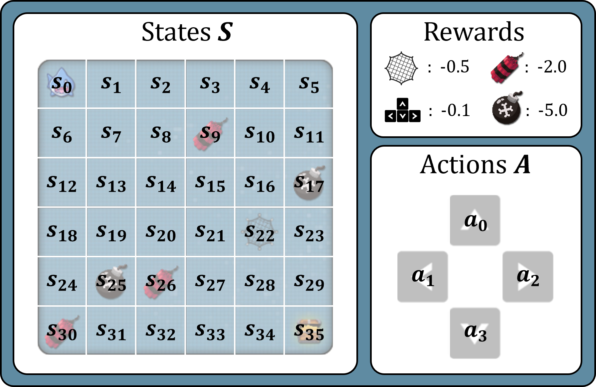

Monte Carlo and Temporal Difference Methods in Reinforcement Learning
An interactive article on introducing Monte Carlo and Temporal difference approach on a grid world. Learn about the Monte Carlo and Temporal difference approaches and their differences.
Under Review
Indicates interactive elements
I. Introduction
Learning by interaction with the environment is a natural form of intelligence that can be observed in both humans and animals. They perceive the state of the environment, take actions based on their understanding, and learn from the feedback they receive. Reinforcement Learning (RL) [1] is a computational approach based on this learning mechanism. Recently, RL showed impressive results in various domains, such as Go [2], StarCraft [3], protein-folding problems [4], etc.

RL consists of four main elements:
- Policy: a probability distribution of actions in a given state. It determines the agent’s behavior.
- Reward: a signal that is given to an agent based on its behavior or actions in an environment. The reward serves as a way to reinforce or encourage certain behaviors and discourage others. It determines a goal in an RL problem.
- Value function: the total reward an agent will get in the future, starting from a specific state. It shows how good a state is in the long run.
- The model of the environment: a model that makes predictions of the environment’s behavior, thereby enabling inference about how the environment will behave.
RL is a machine learning technique that allows an agent to learn decision-making by interacting with an environment through trial and error. In each step, the agent’s policy decides on action based on the current state. The environment then responds with the next state and a reward. If the agent reaches the terminal state, the episode ends. To improve its decision-making, the agent’s policy can be updated based on the value function, which estimates the value of a state or action. However, accurately predicting future rewards without visiting all possible states can be challenging.
There are two types of RL algorithms: model-free and model-based. Model-free algorithms estimate the value function from multiple trials and update the policy based on these values. In contrast, model-based algorithms compute states’ values by considering all possible future states and actions using the environment model.
This article will focus on two fundamental model-free algorithms: Monte Carlo (MC) and Temporal Difference (TD). These algorithms are effective in solving various RL problems, and we will train and evaluate agents in a grid-based environment where the agent starts from the upper left and aims to reach the lower right grid.
Introducing the SharkGame environment.
II. Markov Decision Process
RL is a widely-used methodology in machine learning that focuses on solving sequential decision-making problems where current decisions affect future outcomes. Markov Decision Process (MDP) is one of the most popular ways to formalize this process, providing a useful framework for solving sequential decision-making problems.
MDPs are defined by states, actions, transition probabilities, and reward function. Understanding MDP is crucial as the goal of RL is to find an optimal policy that maximizes total rewards or evaluates the value of a set of actions given MDP’s rules and constraints. MDP extends the concept of a Markov process, which is a stochastic process that only consists of states and transition probabilities.
Markov Process
A stochastic process that models the evolution of a system over time is called a Markov process. At each time step, the state may remain the same or transition to a different state based on the probability of transition that depends solely on the current state. This is known as the Markov Property, which states that the future state of the system is dependent only on the present state and not on any previous states. An example [5] of a Markov process is shown in Figure 3.

There are five possible states that a child can be in, including \(s_0\)(Lying), \(s_1\)(Awake), \(s_2\)(Drowsy), \(s_3\)(Light Sleep), and \(s_4\)(Deep Sleep). Each state lasts a unit of time, such as one minute, and transitions to the next state based on certain probabilities. Assuming that the Markov process always starts with the child \(s_0\)(Lying), the child remains in this state for one minute. After that, there is a 40% probability of transitioning to \(s_1\)(Awake) or a 60% probability of transitioning to \(s_2\)(Drowsy). The process continues until the child reaches \(s_4\)(Deep Sleep) , which ends the Markov process.
Here are the components that make up a Markov process:
- State Space (\(S\)): All possible states that the system can take, such as Deep Sleep, Light Sleep, Drowsy and Awake, represented as \(\{s_0, s_1, s_2, s_3, s_4\} \in S\).
- Transition Probability(\(P_{ss'}\)): The probability of transitioning from state \(s\) to another state \(s'\) at step \(t\), represented as \(P_{ss'} = P(S_{t+1} = s' \mid S_{t} = s)\).
\[ \begin{array}{c c} & \begin{array}{c c c c c} s_0 & s_1 & s_2 & s_3 & s_4 \\ \end{array} \\ P_{ss'} = \begin{array}{c c c}s_0 \\ s_1 \\ s_2 \\ s_3 \\ s_4 \end{array} & \left[ \begin{array}{c c c} & 0.4 & 0.6 & & \\ 0.1 & 0.9 & & & \\ & & & 0.7 & 0.3 \\ & & & & 1.0 \\ & & & & 1.0 \\ \end{array} \right] \end{array} \]
Markov Decision Process
The Markov Decision Process (MDP) extends the Markov process by incorporating decision-making capabilities, which sets it apart from the latter. While the Markov process models a system where the future state is determined only by the current state, the MDP introduces the concept of actions taken by an agent that can influence the next state of the system. This enables the MDP to better model real-world scenarios.
In an MDP, the agent chooses an action based on its current state and the reward associated with the action at each time step. Subsequently, depending on the transition probability, the following state is established. The agent’s goal is to learn a policy that maps states to actions that maximize the expected cumulative reward over time. By making decisions based on this policy, the agent can navigate the system and achieve its objectives efficiently. Figure 5 provides an example of an MDP.

Here are the components that make up an MDP:
- State Space (\(S\)): All possible states the system can take, represented as \(\{s_0, s_1, s_2, s_3, s_4\} \in S\).
- Action Space(\(A\)): All possible actions that can be taken given a state \(s\), including singing a lullaby and playing with the child, represented as \(\{a_0, a_1\} \in A\).
- Transition Probability(\(P_{ss'}^a\)): The probability of transitioning from state \(s\) to another state \(s'\) after taking action \(a\) at step \(t\), represented as \(P_{ss'}^a = P(S_{t+1} = s' \mid S_{t} = s, A_{t}=a)\).
- Reward function(\(R\)): The reward function in this MDP can evaluate the desirability of different actions by providing a scalar value called Reward(\(R_t)\) given step \(t\).
- Discount Factor(\(\gamma\)): It is a value between 0 and 1 that determines the importance of immediate rewards versus long-term rewards.
The MDP differs from Markov processes, including a goal through reward. In the context of helping a child sleep, a reward function can be set to encourage good sleeping patterns. Alternatively, if the objective is to play with the child, the MDP may reward being awake. When given an MDP, the objective is to determine the optimal action to take in each state to maximize the total rewards.
For instance, \(a_1\)(Playing with child) in the \(s_0\)(Lying) immediately transitions to the state \(s_1\)(Awake) and receives positive rewards (since the child wants to play). However, in the long term, continuous \(a_0\)(Singing a lullaby) to put the child to sleep will yield the highest total sum of rewards. Interestingly, If \(a_0\)(Playing with child) action is taken while the child is \(s_2\)(Drowsy), depending on the given probability, it may transition to an awake state or a lying state. This transition probability helps to model problems in a realistic way.
To maximize the sum of rewards(\(R_t\)) by time(\(t\)) in an MDP, it is necessary to evaluate the value of each state and determine the action to take in each state(\(s\)). The value of a state is determined by the expected sum of discounted future rewards that can be obtained by taking a particular action in that state. The discounting factor(\(\gamma)\) is used to ensure that immediate rewards are valued more highly than delayed rewards. This expected sum of future rewards is called the return(\(G_t\)).
However, the expected return value must be used since the return value changes every time due to probabilistic factors such as transitions. A function that outputs the expected return value for each state is called the value function (\(V_\pi\)). The value function is a critical concept in RL as it enables an agent to evaluate the value of different states and determine the optimal policy to follow to maximize rewards. \[V(s) = \mathbb{E}\left[G_t \mid S_t=s\right]=\mathbb{E}\left[\sum_{k=0}^{\infty} \gamma^k R_{t+k+1} \mid S_t=s\right], \text { for all } s \in \mathcal{S}\]
The transition probability and reward function are unknown in a model-free environment, and therefore, they must be estimated from experience. Two primary methods for estimating the value function in a model-free environment are the MC method and the TD method.
SharkGame Environment
The SharkGame can be viewed as an MDP where the states represent the position of the shark character and the actions are moving up, down, left, or right. The probability of transitioning to a new state is deterministic, meaning the action will always result in a specific next state. If the agent is at the top left corner and chooses to move right, it will always transition to the state on the right with no chance of moving to the state above, below, or left. The reward function provides negative feedback for each step and obstacles encountered, such as bombs and nets. This approach encourages the agent to find the shortest path to the goal while avoiding obstacles. The consequently learned policy is to select actions that lead to the transition to the state with the maximum value.

Introducing the random agent on the SharkGame.
III. Monte Carlo approach
MC estimates the values by simply averaging the sample returns. This technique relies on simulating multiple episodes of an agent's interaction with the environment. In each episode, the agent takes actions and receives rewards, and the sequence of states, actions, and rewards is recorded. The final outcome of each episode is used to update the value of each state. The MC approach estimates the value of a state as the average of the returns received in all the episodes in which that state was visited. The return is the sum of the rewards received after visiting that state until the end of the episode. The estimated value of a state becomes more accurate as the number of episodes' increases.
After each episode, the sample return $$G_t$$ is computed at each step.
$$G_t = R_{t+1} + \gamma R_{t+2} + ... + \gamma^{T-1} R_{T}$$
Then for each visited state in the episode, the increment counter $$N(s_t)$$ (which refers to the number of visits to state $$s_t$$) increased by 1 and the sample return $$G_t$$ is added to the total return $$S(s_t)$$, and finally dividing $$S(s_t)$$ by $$N(s_t)$$, the state value $$V(s_t)$$ is obtained.
\[N(s_t) = N(s_t) + 1\] \[S(s_t) = S(s_t) + G_t\] \[V(s_t) = S(s_t) / N(s_t)\]
3D value table of the MC agent.
There are a few disadvantages of the MC approach. One disadvantage is that MC requires complete episodes of interaction with the environment before updating the values of states. This can be time-consuming and computationally expensive, especially in problems where episodes are long or infinite. In addition, MC can suffer from high variance in the estimates of values, particularly when episodes are short or few. This variance can make it difficult for the agent to learn the true values of states, and can lead to slower convergence. The following TD approach addresses these issues, making learning the values more stable and efficient.
IV. Temporal Difference learning
TD is another method for estimating the value function in RL. Unlike MC methods, which require waiting until the end of an episode to update the value function, TD updates the value function at every transition. MC methods require the complete return of an episode to update the value function. However, this return cannot be known until the end of the episode. This waiting time can be avoided by using TD, which updates the value function before the end of an episode.
TD achieves this goal using the Bootstrap method, which updates an estimate using another estimate. Specifically, TD updates the current value function($V(s_t)$) with a more accurate estimate($R_{t+1} + \gamma V(s_{t+1})$) takes into account the sampled reward received by the agent. This allows TD to update the value function estimate incrementally and in real-time, without the need to wait for the end of an episode. \[V\left(s_t\right)=\mathbb{E}\left[R_{t+1}+\gamma V\left(s_{t+1}\right)\right]\]
Compared to MC methods, TD is more computationally efficient because of the frequent update. However, it has bias and may not converge to the true value function. This is because TD uses an estimated function $V(s)$ for the update instead of a true value function. Despite its limitations, TD has demonstrated practical effectiveness in various real-world applications and has been successfully applied to various RL problems.
3D value table of the TD agent.
V. Difference between MC and TD
Both MC and TD approaches are used in RL to estimate the value function, but they differ in how they update this function. MC estimates values by averaging the sample returns obtained from multiple episodes, while TD uses the Bellman equation to compute target values from the estimated values. This means that MC can update values only at the end of each episode, while TD can update values after each time step. Therefore, MC can be more computationally expensive and time-consuming, whereas TD is more efficient and faster to converge.
Whereas MC and TD estimate values differently, both converge asymptotically to the true values. You can see the optimal agent’s behavior in the figure below. The true values are obtained by considering all possible future states and actions using an environmental model. The optimal agent selects the best action based on these values, resulting in the highest possible reward. While the optimal agent considers all possibilities, MC and TD agents only consider a subset of possible future states and actions.
From a machine learning perspective, we can consider the bias and variance of these two algorithms. MC learning has a low bias but high variance because it estimates the value function by averaging the returns from multiple episodes, which can lead to high variance. However, since the value function is updated only with the sample returns, the estimation introduces no bias. On the other hand, TD learning has low variance but high bias because it updates the value function at each time step based on the estimated target values. This leads to lower variance since each update is based on a single time step, but it can introduce bias since the value function is updated with the estimated target values.
In practice, the choice between MC and TD depends on the specific problem and the available resources. By understanding the differences between MC and TD, researchers and practitioners can choose the most appropriate approach for their particular application.
Optimal behavior can vary depending on the MDP. In the figure below, you can create your own MDP and check how optimal, MC, and TD agents behave. The value table for the optimal agent is calculated based on its behavior.
Example of an MDP.
V. Conclusion
In conclusion, this paper has presented an overview of two common approaches in RL: MC and TD. While these methods have their respective advantages and disadvantages. However, it is important to note that RL encompasses many other approaches beyond these two, such as model-based [6] and policy gradient methods [7] are also commonly used in this field. These other methods may better suit certain problems or have particular advantages in different contexts.
Moreover, recent advancements in the field of RL have demonstrated the potential for combining RL with deep learning to achieve even better results [8]. These hybrid approaches have shown promise in various applications, from game-playing and robotics to natural language processing and recommendation systems. As the field continues to evolve, we will likely see more innovations and breakthroughs in the area of RL, and it will be exciting to see how these new approaches and techniques can be applied to address real-world challenges.
References
- Reinforcement learning: An introduction Sutton, R. S., & Barto, A. G. 2018. MIT press.
- Mastering the game of go without human knowledge Silver, David, et al. 2017. Nature 550.7676: 354-359. DOI:10.1038/nature24270
- Grandmaster level in StarCraft II using multi-agent reinforcement learning Vinyals, Oriol, et al. 2019. Nature 575.7782: 350-354. DOI:10.1038/s41586-019-1724-z
- Highly accurate protein structure prediction with AlphaFold Jumper, John, et al. 2021. Nature 596.7873: 583-589. DOI:10.1038/s41586-021-03819-2
- RL from Basics S. Rho, "Markov Decision Process," in 바닥부터 배우는 강화학습 [RL from Basics], Seoul, South Korea, Youngjin.com, 2020, pp. 35–53.
- Model-based reinforcement learning: A survey Moerland, T. M., Broekens, J., Plaat, A., & Jonker, C. M. 2023. Foundations and Trends in Machine Learning, 16(1), 1-118. DOI:10.1561/2200000086
- A natural policy gradient Kakade, S. M. 2001. Advances in neural information processing systems, 14.
- Human-level control through deep reinforcement learning Mnih, Volodymyr, et al. 2015.Nature 518.7540: 529-533. DOI:10.1038/nature14236